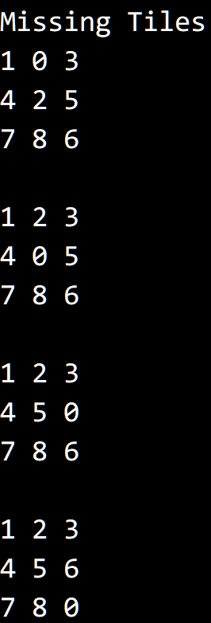
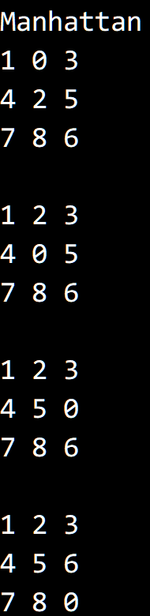
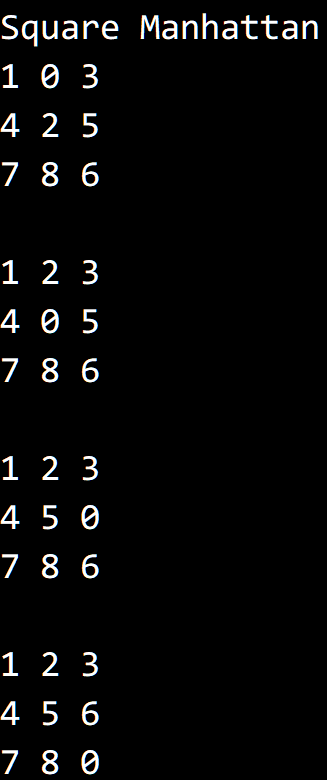

搜索解答
目前已完成到 2.5
2.5.32
上次更新：2019-02-11
题目
2.5.32 8 字谜题。 8 字谜题是 S.Loyd 于 19 世纪 70 年代发明的一个游戏。 游戏需要一个三乘三的九宫格，其中八格填上了 1 到 8 这 8 个数字，一格空着。 你的目标就是将所有的格子排序。 可以将一个格子向上下或左右（但不能是对角线方向）移动到空白的格子中。 编写一个程序用 A* 算法解决这个问题。 先用到达九宫格的当前位置所需的步数加上错位的格子数量作为优先级函数 （注意，步数至少大于等于错位的格子数）。尝试用其他函数代替错位的格子数量， 比如每个格子距离它的正确位置的曼哈顿距离，或是这些距离的平方之和。
解答
（前置知识：提前了解 Dijkstra 算法能够降低理解 A* 算法的难度。）
A* 算法是 Dijkstra 算法和最佳优先算法的一种结合。
Dijkstra 算法需要遍历所有结点来找到最短路径，唯一的优化条件就是路径长度。 建立队列 queue ，把所有的结点加入 queue 中；建立数组 d，d[v] 代表起点到点 v 的距离。 开始时只有起点到起点的距离为 0，其他都为无穷大，然后重复如下步骤： 从队列中取出已知距离最短的结点 u，检查该结点的所有边。 如果通过这个点能够以更近的距离到达 v，更新起点到 v 的距离 d[v] = d[u] + distance(u, v)。 等到队列为空之后数组 d 中就存放着起点到其他所有结点的最短距离。
Dijkstra 算法会计算起点到所有点的最短路径，因此会均匀的遍历所有结点，效率较低。 很多时候，我们只需要找到起点到某一终点的最短路径即可，为此遍历整个图显然是不必要的。 通过修改算法，使得比较接近终点的结点优先得到搜索，我们就可能在遍历完全部结点之前获得结果。
在 Dijkstra 算法中，离起点最近的点会被优先搜索，记结点离起点的距离为 g[n] 。 现在引入新的条件，用于估计结点和终点的接近程度，记结点离终点的估计距离为 h[n] 。 令 f[n] = g[n] + h[n]，我们按照 f[n] 对等待搜索的结点进行排序。 同时令 h[n] 始终小于 g[n] ，保证离起点的距离 g[n] 权重大于离终点的估计距离 h[n] 。 （h[n]也被称之为容许估计） 于是在离起点距离接近的条件下，离终点比较近的点会被优先搜索，减少搜索范围。
接下来就是算法的具体内容，与 Dijkstra 算法不同，A* 算法不一定需要访问所有结点， 因此 A* 算法需要维护两个集合，openSet 保存等待搜索的结点，closeSet 保存已经搜索过的结点。 和 Dijkstra 算法类似，一开始 openSet 中只有起点，closeSet 则是空的。 然后重复执行如下步骤，直到 openSet 为空： 从 openSet 中取出 f[n] 最小的结点 u ，放入 closeSet。（标记为已访问） 如果 u 就是终点，算法结束。 计算结点 u 直接可达的周围结点，放入集合 neighbors。 遍历 neighbors 中的所有结点 v，做如下判断： 如果 v 已经存在于 closeSet ，忽略之。（防止走回头路） 如果经过 u 不能缩短起点到 v 的路径长度 g[v]，忽略之。（和 Dijkstra 算法一样的做法） 否则将 v 放入 openSet，更新 g[v] = g[u] + distance(u, v) ，计算 f[v] = g[v] + h[v]。（更新结点） 以上是 A* 算法的核心逻辑， 为了结合具体问题，我们需要自定义计算 g[n] 和 h[n] 的方法，以及获得某个结点周围结点的方法。
这里有个问题，openSet 和 closeSet 应该用什么数据结构？ closeSet 比较简单，只需要添加和查找即可，哈希表 HashSet 是不二选择。 openSet 需要读取并删除最小元素，以及添加和查找元素，用最小堆 MinPQ 会是比较方便的方法。 书中给出的最小堆 MinPQ 没有实现 Contains 方法，需要自己实现一个，简单顺序查找就够用了。 同时 MinPQ 的 Greater 比较方法也需要重新实现，需要使用基于 f[n] 进行比较的比较器。
现在我们考虑 8 字谜题如何用 A* 算法实现。 棋盘的每一个状态就是一个结点，每走一步就能进入下一个状态，结点可以这么定义：
g(start, goal) 直接就是 goal.Steps - start.Steps，h(start, goal) 则根据题意有不同的实现。 获得周围结点的方法 GetNeighbors(current)，会返回一个数组，其中有从 current 上下左右走获得的棋盘状态。
运行结果，初始状态为：
0 1 3
4 2 5
7 9 6  
代码
A* 算法的泛型实现
using System;
using System.Collections.Generic;
namespace SortApplication
{
/// <summary>
/// A* 搜索器。
/// </summary>
/// <typeparam name="T"></typeparam>
public abstract class AStar<T> where T : IComparable<T>
{
/// <summary>
/// 相等比较器。
/// </summary>
private readonly IEqualityComparer<T> equalityComparer;
/// <summary>
/// 默认相等比较器。
/// </summary>
class DefaultEqualityComparer : IEqualityComparer<T>
{
public bool Equals(T x, T y)
{
return x.Equals(y);
}
public int GetHashCode(T obj)
{
return obj.GetHashCode();
}
}
/// <summary>
/// 根据 FScore 进行比较的比较器。
/// </summary>
class FScoreComparer : IComparer<T>
{
Dictionary<T, int> fScore;
public FScoreComparer(Dictionary<T, int> fScore)
{
this.fScore = fScore;
}
public int Compare(T x, T y)
{
if (!this.fScore.ContainsKey(x))
this.fScore[x] = int.MaxValue;
if (!this.fScore.ContainsKey(y))
this.fScore[y] = int.MaxValue;
return this.fScore[x].CompareTo(this.fScore[y]);
}
}
/// <summary>
/// 新建一个 Astar 寻路器，使用元素默认相等比较器。
/// </summary>
protected AStar() : this(new DefaultEqualityComparer()) { }
/// <summary>
/// 新建一个 AStar 寻路器。
/// </summary>
/// <param name="equalityComparer">用于确定状态之间相等的比较器。</param>
protected AStar(IEqualityComparer<T> equalityComparer)
{
this.equalityComparer = equalityComparer;
}
/// <summary>
/// 获得最短路径。
/// </summary>
/// <param name="start">起始状态。</param>
/// <param name="goal">终止状态。</param>
/// <returns></returns>
public T[] GetPath(T start, T goal)
{
Dictionary<T, T> comeFrom = new Dictionary<T, T>(this.equalityComparer);
Dictionary<T, int> gScore = new Dictionary<T, int>(this.equalityComparer);
Dictionary<T, int> fScore = new Dictionary<T, int>(this.equalityComparer);
MinPQ<T> openSet = new MinPQ<T>(new FScoreComparer(fScore), this.equalityComparer);
HashSet<T> closeSet = new HashSet<T>(this.equalityComparer);
openSet.Insert(start);
gScore.Add(start, 0);
fScore.Add(start, HeuristicDistance(start, goal));
while (!openSet.IsEmpty())
{
T current = openSet.DelMin();
if (this.equalityComparer.Equals(current, goal))
return ReconstructPath(comeFrom, current);
closeSet.Add(current);
T[] neighbors = GetNeighbors(current);
foreach (T neighbor in neighbors)
{
if (closeSet.Contains(neighbor))
continue;
int gScoreTentative = gScore[current] + ActualDistance(current, neighbor);
// 新状态
if (!openSet.Contains(neighbor))
openSet.Insert(neighbor);
else if (gScoreTentative >= gScore[neighbor])
continue;
// 记录新状态
comeFrom[neighbor] = current;
gScore[neighbor] = gScoreTentative;
fScore[neighbor] = gScore[neighbor] + HeuristicDistance(neighbor, goal);
}
}
return null;
}
/// <summary>
/// 倒回重建最佳路径。
/// </summary>
/// <param name="status">包含所有状态的数组。</param>
/// <param name="from">记载了状态之间顺序的数组。</param>
/// <param name="current">当前状态位置。</param>
/// <returns></returns>
private T[] ReconstructPath(Dictionary<T, T> comeFrom, T current)
{
Stack<T> pathReverse = new Stack<T>();
while (comeFrom.ContainsKey(current))
{
pathReverse.Push(current);
current = comeFrom[current];
}
T[] path = new T[pathReverse.Count];
for (int i = 0; i < path.Length; i++)
{
path[i] = pathReverse.Pop();
}
return path;
}
/// <summary>
/// 计算两个状态之间的估计距离，即 h(n)。
/// </summary>
/// <param name="start">初始状态。</param>
/// <param name="goal">目标状态。</param>
/// <returns></returns>
protected abstract int HeuristicDistance(T start, T goal);
/// <summary>
/// 计算两个状态之间的实际距离，即 g(n)。
/// </summary>
/// <param name="start">初始状态。</param>
/// <param name="goal">目标状态。</param>
/// <returns></returns>
protected abstract int ActualDistance(T start, T goal);
/// <summary>
/// 获得当前状态的周围状态。
/// </summary>
/// <param name="current">当前状态。</param>
/// <returns></returns>
protected abstract T[] GetNeighbors(T current);
}
}